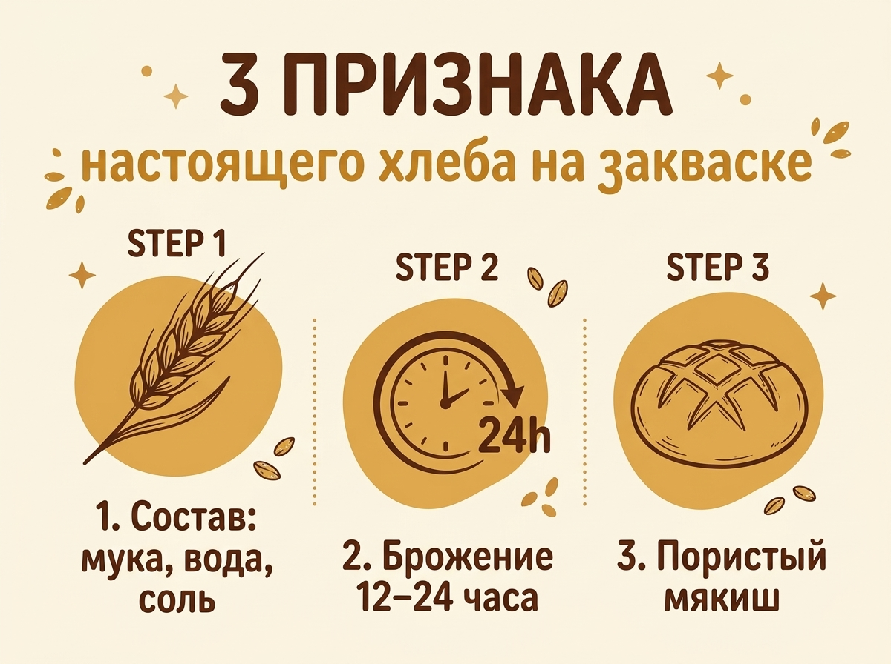

Чем отличается ремесленный хлеб на закваске от обычного
Настоящий ремесленный хлеб на живой закваске готовится без промышленных дрожжей и искусственных улучшителей.

3 признака настоящего хлеба на закваске
- Натуральный состав: только мука, вода, соль и живая закваска.
- Длительное брожение 12–24 часа: тесто созревает медленно, а хлеб дольше сохраняет свежесть.
- Пористый мякиш и корочка: равномерная структура без пустот и плотная румяная корочка.
Скидка 15% на первый заказ по промокоду UTRO15
Закажите свежий хлеб на закваске, круассаны и печенье без сахара с доставкой по Москве.
Перейти в магазин «Хлебная история»